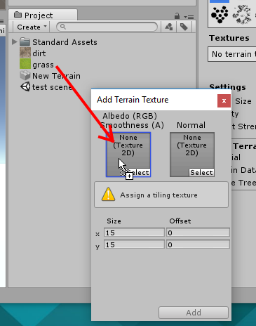

Building a simple outdoor game
Or go back to home
Unity makes some things really easy. Let's see how quickly we can make a first-person outdoor game.
Start a new empty project
(Change to the standard tutorial layout)
Add a terrain (Create -> 3d -> Terrain)

Select the terrain
Select the first terrain drawing tool
Draw on the terrain in the Scene view to raise the ground.
Now we need a player character.
Import the standard characters (Assets -> Import Package -> Characters)
This might take a while...
When it finishes, you have some new packages in your Project view. Find the First Person Controller and drag it into your Scene view.
This character comes with some instructions. You can see them here:
The instructions say we need to delete the Main Camera from our scene, because the First Person Controller has its own built-in camera.
So delete the main camera.
Now press the Play button to play your game. You should be able to walk with the WASD keys, jump with Spacebar and look around with the mouse. You might have to click on the Game view to make the controls work.
Pretty good right? We haven't written any code yet!
Let's make the terrain look nicer. We will need to find some textures.
Let's go to opengameart.org and find a nice grass texture.
When you use other people's assets, you need to check what licence you have been granted. This texture uses a CC-BY 3.0 licence.
If you don't know what that licence means, click on the licence icon or search online. A CC-BY licence means we can use the texture in any way we like, but we MUST give credit to the author.
Make sure you keep a record of where you found the texture and who the author was, so you can credit it correctly in your game's credits.
OK
Drag the asset into Unity's Project view.
Select the texture
In the Inspector, you can change settings for the texture.
For terrain textures, you must change the Alpha Source to None, otherwise the texture will turn shiny and reflective on your terrain!
Find a few more textures that you like and add them in the same way, so you have at least two textures.
(Some textures come in a .zip or .rar file. You will have to extract the file to get the images out, before you can drag the images into Unity.)
OK, go back to the Hierarchy view and select the terrain.

In the Inspector for the terrain, choose the paintbrush tool
and then click 'Edit Textures...' and 'Add Texture...'
Drag one of your textures into the Albedo box (on the left) and click 'Add'

Click 'Add'
Your terrain will be filled with the first texture you add.
Add your other textures using the same process.
Now you can select one of the textures and paint it onto your terrain using the paint tool.
(If your ground looks shiny and reflective, you missed a step - go back and look for the part about alpha.)
Set up a skybox
The Skybox is a huge box around the whole world. It makes us feel like we are in a real place, but we are really inside a giant cube.
(The skybox moves with the camera, so you can never get closer to it or further away from it.)
To make a skybox you need 6 textures for the 6 sides of the box. go back to opengameart.org and search for a nice set of skybox textures.
Import a set of 6 textures for your skybox.
How do we use a new skybox? I couldn't work it out on my own, so I searched on Google for 'unity skybox' and I found these instructions: https://docs.unity3d.com/Manual/HOWTO-UseSkybox.html
Follow the linked instructions to set up a custom skybox.
(Short summary of the instructions: A skybox is a material, so add a new Material in the Project View. Select it and change its shader to Skybox - 6 sided. Drag your 6 textures into the 6 slots in the skybox. Click Window -> Lighting at the top of the Unity window and change the skybox to your new skybox.)
Add a 3d model
Find a 3D model on opengameart.org - maybe a car. Download it (remember to check the licence!) and drag it into Unity just like you did with the textures.
(If the model came in a .rar or .zip file, you must extract it before you can drag it into Unity.)
Figure out which part contains the actual 3d model.
Drag it into the scene.
This model came out really small, so I selected it in the Hierarchy and changed the scale.
If you press play, the car will be there but it won't do anything and you can't interact with it.
TODO: add more screenshots from here.
Add a collider component to the car. Add a rigidbody and try playing around with the physics.
A mesh collider is more accurate, but won't work with rigidbody physics if the mesh is too complicated. You might want to use 2 or 3 simpler colliders that approximate the shape.
If you use a mesh collider, it must be on the same game object that contains the mesh or it won't know what mesh to use. With the car I used, the mesh is on a child object so add the mesh collider to that child object.
Add a spotlight and attach it to the car. Try pushing the car around and see how the spotlight moves with it.